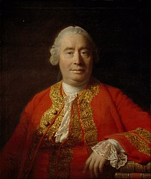

(Edimburgo, 1711 - 1776) David Hume fue un filósofo británico, el último de los grandes representantes del empirismo inglés.
Era de familia acomodada, sin embargo, no lo suficiente como para permitir a Hume el poder dedicarse exclusivamente a la filosofía, por lo que su padre lo orientó hacia la carrera de abogado.No obstante Hume abandona su trabajo como abogado y decide dedicarse exclusivamente a la filosofía.
De 1734 a 1737 se planteó los problemas de la filosofía especulativa. Durante este periodo escribió su obra más importante, Tratado sobre la naturaleza humana (1739-1740). Escribió además Ensayos morales y políticos (1741-1742).
Por otra parte, empiristas como John Locke y George Berkeley influyeron en su filosofía, así como algunos escritores franceses
Se ha considerado a Hume como uno de los máximos representantes del llamado empirismo inglés; su análisis crítico del conocimiento insistió en la importancia de investigar el origen de las ideas.Asimismo, sometió a crítica toda clase de ideas, y refutó en especial las de sustancia, existencia y relación causal.
